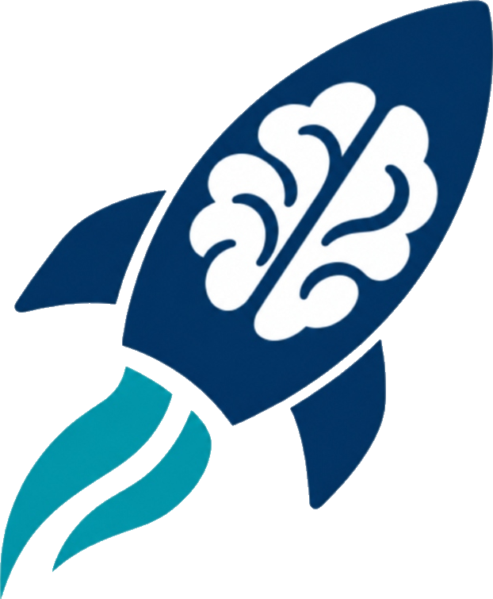

Neuroscience Expertise
Scientific, clinical, and translational guidance rooted directly in the world-leading Mass General Brigham neurology, neurosurgery, and neuroscience community.

The MGB NSI Launchpad is a dedicated commercialization pathway within the Mass General Brigham Neuroscience Institute—built in close coordination with MGB Innovation—that empowers faculty, clinicians, trainees, and staff to turn transformative neuroscience insights into viable, high-impact companies.

🚀 Preparing for Program Launch: Late November 2026
The Launchpad turns the Neuroscience Institute's clinical and scientific discoveries into companies. It gives faculty, trainees, and staff across Mass General Brigham a clear, rigorous route from a clinical or scientific insight to company formation and investment readiness.
Scientific, clinical, and translational guidance rooted directly in the world-leading Mass General Brigham neurology, neurosurgery, and neuroscience community.
A focused, high-impact weekly curriculum covering the essential strategic, regulatory, IP, and operational decisions involved in building a life-sciences or medtech venture.
Hands-on company-formation guidance, co-founder and team development, clinical customer discovery, and milestone-driven preparation for seed and Series A financing.
Direct access to seasoned biotech/medtech entrepreneurs, business-school collaborators, strategic industry partners, and early-stage healthcare investors.
NSI provides the clinical neuroscience focus and investigator community. NSI Launchpad—in close partnership with MGB Innovation—brings dedicated commercialization expertise, IP strategy, and venture infrastructure.
Designed to meet neuroscience innovators where they are—from a promising bedside or laboratory concept in Stage 1 to individualized venture acceleration and SAFE-based investment in Stage 2.
A structured launch program for early neuroscience company ideas
Any MGB employee may lead a team with a plausible neuroscience company idea. No prior IP, prototype, or existing company is required. Team members and co-founders may come from outside MGB.
Individualized support for ventures that have already demonstrated progress
Both Stage 1 graduates and independently recruited MGB neuroscience ventures may enter. Applicant teams should demonstrate concrete progress toward a company, prototype product, or protected intellectual property.
Departmental briefings across Neurology and Neurosurgery are underway now ahead of formal program launch and Tier 1 application opening in late November 2026.
Neurology and Neurosurgery faculty, trainee, and staff briefings across MGH and BWH.
Official NSI Launchpad launch and opening of inaugural Tier 1 (Stage 1 Incubator) applications.
Selection of 3–5 inaugural neuroscience venture teams for the Stage 1 Incubator cohort.
12-week structured incubator curriculum, Mentor Network pairing, and Demo Day preparation.
Applications open for the Stage 2 Accelerator (up to 3 ventures, 6-month individualized support & SAFE investment).
The NSI Launchpad Advisory Board convenes quarterly to provide strategic guidance and comprises ~8 senior leaders from outside academia alongside MGB Innovation. A separate Mentor Network gives participating teams hands-on operational advice throughout the program.
Uniting world-renowned physician-scientists, neurotechnology founders, Wharton and MIT Sloan MBA clinician-innovators, and Mass General Brigham Neuroscience Institute executive leaders. Select any leader's card to explore their full executive dossier.
Showing 6 of 6 leadership profiles.

Chief, Division of Epilepsy & Clinical Neurophysiology (MGB) • Professor of Neurology, Harvard Medical School • Co-Director, CNTR
Co-Principal Investigator in the landmark BrainGate intracortical brain-computer interface (BCI) clinical trials restoring communication and motor control in paralysis and ALS. Co-Directs the MGH Center for Neurotechnology and Neurorecovery (CNTR) and Neurotechnology Trials Unit, holding multiple patents across spatiotemporal seizure prediction algorithms, high-density microelectrode arrays (μECoG/Neuropixels), closed-loop neuromodulation, and implantable neural telemetry.
Professor of Neurology at Harvard Medical School, Division Chief of MGB Epilepsy, and Founding Director of the NeuroHINTS Labs. Earned his MD and PhD in Neurobiology at Columbia University before training at MGH/BWH. Principal Investigator on numerous NIH/NINDS R01, U01, and K24 awards with 200+ papers in Science, Nature, Nature Neuroscience, Nature Medicine, and Brain.

Instructor in Neurology, Harvard Medical School • Clinician-Investigator, MGH & BWH Epilepsy • Principal Investigator, Hadar Lab (CNTR)
Trained in translational venture design and medical device commercialization through his MSc in Translational Research (MSTR) at the University of Pennsylvania. Leads the Hadar Lab within MGH CNTR & NeuroHINTS, developing AI-derived neurophysiological biomarkers, personalized connectomic neurostimulation atlases (RNS/DBS), NeuroEconomics decision frameworks, and clinical deployment architectures for generative AI and LLMs in neurology.
Graduated cum laude from Harvard University (AB, 2013), earned his MD and MSc at UPenn Perelman School of Medicine (2018), completed Neurology Residency at UPenn (2022), and Clinical Epilepsy Fellowship at MGH (2024). Awarded the NIH NINDS R25/UE5 Grant, the AAN/AES/ABF Susan Spencer Scholarship, and the American Brain Foundation Next Generation Research Grant, with publications in Science Translational Medicine and Brain.

Instructor in Neurology, Harvard Medical School • Attending Neurologist, ALS & Neuromuscular Division, Massachusetts General Hospital
Earned her MBA from the Wharton School alongside her MD at the University of Pennsylvania, where shespearheaded medical device development and commercialization centered on brain-computer interfaces (BCIs). At MGB, she architects clinical trial and care-delivery infrastructure for novel gene-targeted and antisense therapies in ALS (including SOD1-ALS and pre-symptomatic genetic variant carriers), forging strategic biopharma and medtech partnerships.
Earned her BA in Economics and English (2013) and dual MD/MBA (2020) at the University of Pennsylvania, followed by Neurology Residency at the Hospital of the University of Pennsylvania (2024) and Clinical Neurophysiology/EMG Fellowship at Columbia University / NewYork-Presbyterian (2025). Published investigator on healthcare utilization, care disparities in myasthenia gravis, and genetic neuromuscular therapeutics.
Associate Professor of Neurosurgery, HMS • Director of Neurosurgical Critical Care & Neurosurgical Innovation, BWH • Surgical Director, Neuro-ICU, Dana-Farber
Co-Founder and Director of Neurosurgical Innovation at Zeta Surgical, a venture-backed Harvard spinout pioneering mixed-reality, AI-driven cranial navigation and robotic bedside surgical & TMS guidance systems. Serves as Clinical & Scientific Advisor to Coagulo Medical Technologies (point-of-care precision coagulation diagnostics). Combines an MBA from MIT Sloan School of Management and an MPH from Harvard T.H. Chan School of Public Health.
Associate Professor of Neurosurgery at Harvard Medical School, Director of Neurosurgical Critical Care at Brigham and Women's Hospital, and Co-Director of the Cushing Neurosurgical Outcomes Center & Computational Neurosurgery Outcomes Center. Double board-certified in Neurological Surgery and Surgical Critical Care, leading big-data machine-learning outcomes research, TBI fluid biomarkers (Plasma PrPC, ADAM-10), and cerebral protection trials.
Chief Administrator, Mass General Brigham Neuroscience Institute • Former Administrative Director of Clinical Operations & New Initiatives, MGH Neurology
Honored by The Women We Admire among top healthcare executive leaders, she serves as Chief Administrator of the Mass General Brigham Neuroscience Institute. Working alongside the NSI Executive Director and Department Chairs across MGH and BWH, she architects enterprise strategic planning, new clinical and translational venture launches, multi-hospital resource optimization, and cross-disciplinary operational integration.
Previously served as Administrative Director of Clinical Operations & New Initiatives for MGH Neurology, spearheading innovative multi-site specialty care access programs. Co-author on peer-reviewed health-services and clinical operations scholarship (including collaborations with Mayo Clinic in The Permanente Journal and Neurology) evaluating integrated neurology population-health models and clinical trial operations.
Senior Director of Business Operations, Mass General Brigham Neuroscience Institute
As Senior Director of Business Operations for the Mass General Brigham Neuroscience Institute, she leads enterprise business strategy, financial modeling, capital allocation, and institutional governance across MGB's neuroscience departments—connecting NSI Launchpad teams with MGB Innovation, finance, and system-wide operational infrastructure for Stage 1 prizes and Stage 2 SAFE investments.
Co-author of peer-reviewed health-systems innovation research published in Neurology (2025)—“Neurology Access Clinic: A Study of Neurologist and Advanced Practice Provider Collaboration in a Tertiary Academic Setting”—establishing the operational framework and clinical impact of the Mass General Brigham Neurology Access Team (NeAT) clinic model, alongside leadership in MGH Memory and Movement Disorders professional programs.
Neurological and neurosurgical disorders represent the leading cause of disability worldwide. The MGB NSI Launchpad creates a high-leverage bridge where visionary philanthropy, institutional venture capital, and clinician-scientists converge to bring life-changing therapies and technologies to patients faster.
Traditional academic grants rarely fund company formation, regulatory de-risking, or prototype engineering. Philanthropic gifts to the NSI Launchpad unlock an extraordinary multiplier—enabling MGB discoveries to cross the translational "Valley of Death" and attract 10x–50x in follow-on venture capital.
Partner directly with the world's largest hospital-based neuroscience research enterprise. The Launchpad curates, mentors, and de-risks high-potential ventures across neurotherapeutics, neurodevices, brain-computer interfaces, surgical robotics, and clinical AI.
Whether you have an early clinical insight with no IP yet (Stage 1 Incubator) or an emerging spinout with prototype or patent progress (Stage 2 Accelerator), the NSI Launchpad gives your team the curriculum, mentorship, and funding pathway to succeed.